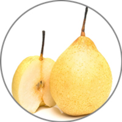
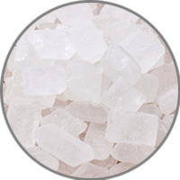
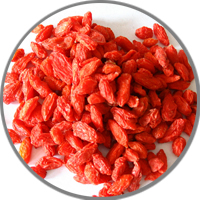

Pearsoup

1 and half
Pear

20 g
rock candy

20 g
Medlar
30 g
Snow fungus

2 cup
Water
50 minutes
Easy
Low calorie
- Soak snow fungus firstly for at least 4 hours. Then move the yellow end. Hand shred into small chunks.
- Prepare a high pressure cooker or slow cooker, and then add enough clean water. Add snow fungus and crystal sugar in to cook for 20 minutes for high pressure cooker and at least 40 minutes for slow cooker.
- Then add red dates and wolfberry in to continue cook for 5 to 10 minutes.